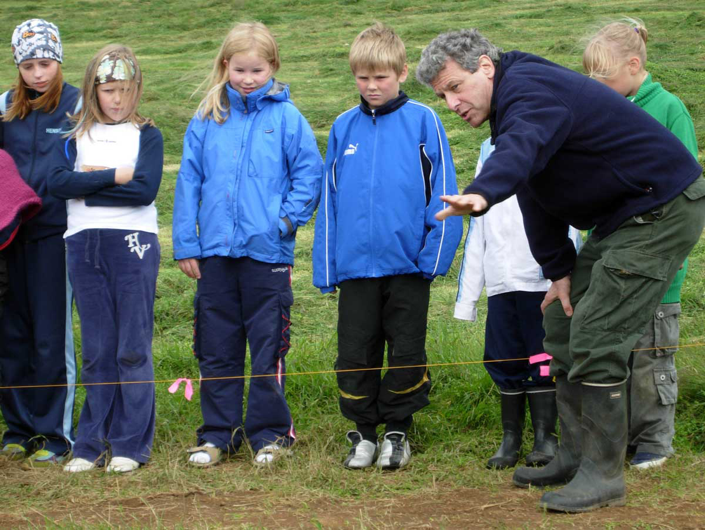
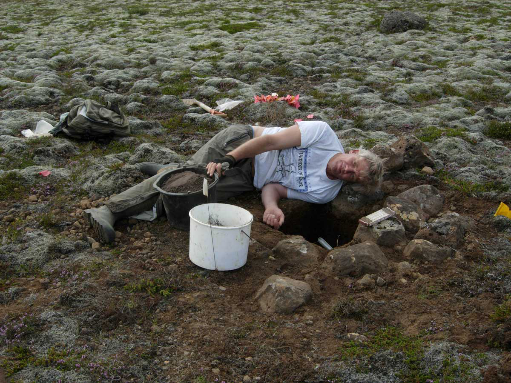
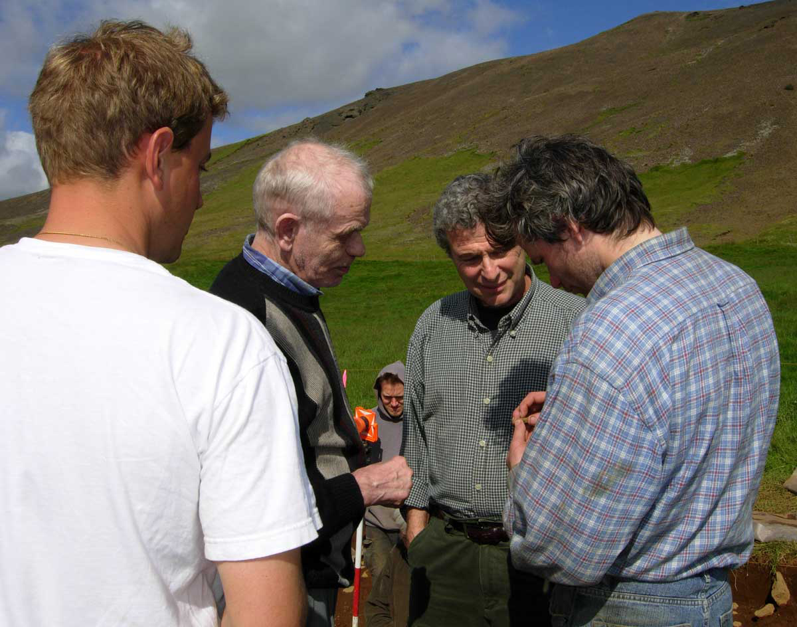
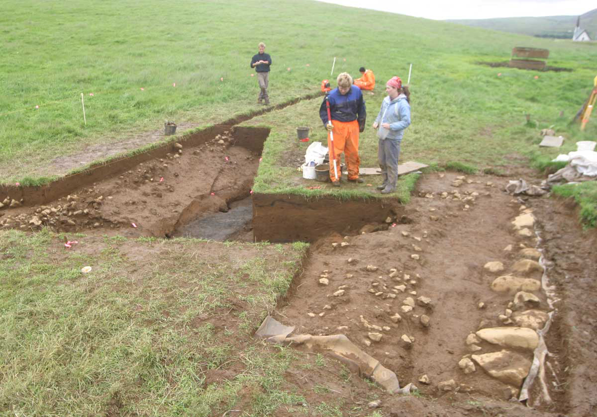
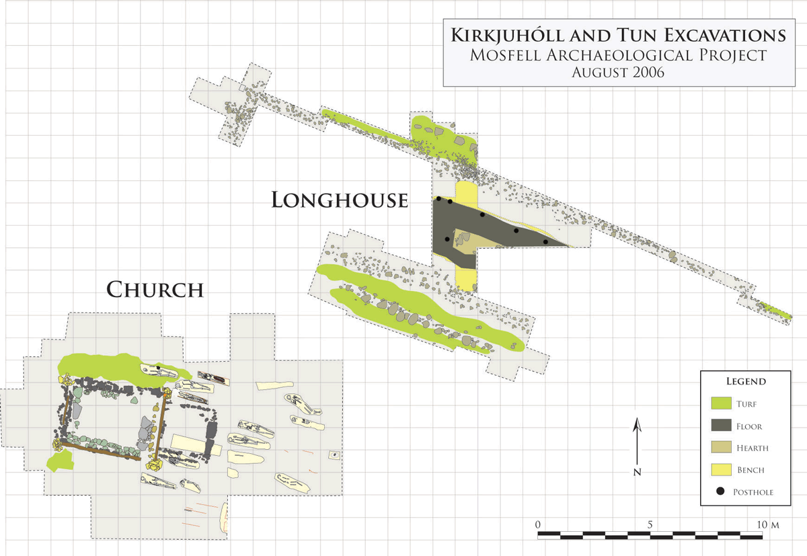

Archaeological Field Work | 2006 Field Season - A Viking Longhouse at Hrísbrú
During the 2006 season, we established the existence of a Viking Age longhouse at Hrísbrú. The archaeological work revealed the architecture and the extent of an early longhouse or skáli that appears to be contemporary with the church uncovered in past seasons. We found this skáli in the old homefield, 10 m northeast of the previously excavated church. The longhouse is more than 27 m long and approximately 10 m wide. The structure appears to be part of the early habitation of the Hrísbrú farm. To begin to unearth this longhouse was the primary goal of our 2006 excavation.
The longhouse at Hrísbrú appears extremely well preserved. Its wall features of stone and turf display apparent symmetry. Inside the walls there are 1 m wide benches, post holes along the inside of these benches, a thick and consistent floor composed of several habitation layers, and an elongated hearth.
With the help of GIS and computing specialists from the Experiential Technology Center at UCLA, we created a fully functional and integrated GIS model of the Mosfell Valley. This model provides a detailed view of the geography of the region with a focus on relationships between the archaeological sites.
 Jesse Byock showing the archaeological excavations to schoolchildren from Mosfellbær.
 Jon Erlandson excavating a test pit at the site of the symbolic ship-settings.
 Jesse Byock, Ólafur Ingimundarson, Andrés Ólaffson, and Davide Zori at Hrísbrú.
 Rhonda Bathurst at Hrisbru longhouse excavations in 2006.
 A map of the Hrisbru farmstead (click to enlarge).